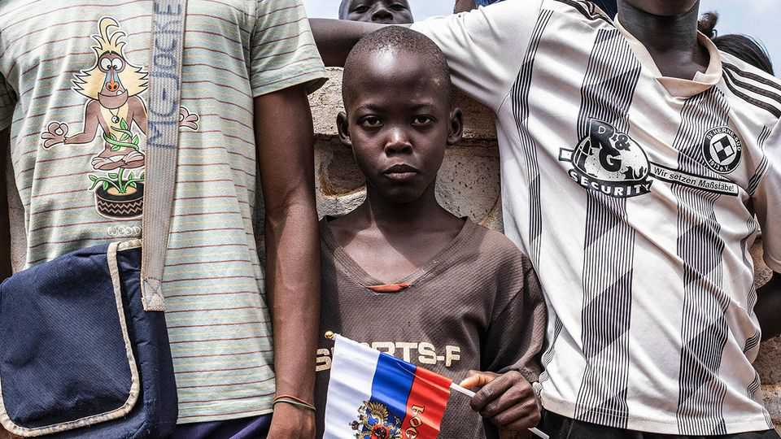

Russia is escalating its information war in Africa
The Kremlin is betting it can sway public opinion on the continent

Oct 22nd 2026
ON OCTOBER 28TH African leaders will gather in Moscow for the third Russia-Africa summit since 2019. For Vladimir Putin the event is part of a concerted effort to persuade the global south that Russia is fighting on behalf of what he calls the “global majority” against “neocolonialism”. The bid has gathered pace since Russia’s full-scale invasion of Ukraine began in 2022. At the most recent summit in 2023 a spokeswoman claimed that “Russian men give their lives at the front so that people from the African continent are free.”
Many African leaders will scoff at such sentiments. But Mr Putin believes that the continent provides fertile ground for seeding Russia’s poisonous ideas. In February Sergei Lavrov, the foreign minister, said 90% of the Russian officials expelled from Europe had been reassigned to the continent. Russia has stepped up attempts to sway African hearts and minds through cultural diplomacy, the Orthodox Church, higher education, professional groups, media ventures and disinformation. As with its more muscular military interventions on the continent, it is hard to assess the success of this cognitive warfare. But Russia benefits from lingering sympathies for the Soviet Union as well as legitimate African criticisms of richer countries.
Russian efforts are like matryoshka dolls: there is more to them than meets the eye. Take cultural diplomacy. In September Russia said it would expand the number of “Russia Houses”, cultural institutions that operate under the ministry of foreign affairs, in Africa from 16 to 24. Critics, such as Ivan Klyszcz of the International Centre for Defence and Security, an Estonian think-tank, call them “nodes in Russian propaganda networks”. The films they show support Kremlin narratives: “Battle for Africa”, a documentary about how Russia came to the aid of Sahelian countries defying French “neocolonialism”, or “Why I Moved To Russia”, about Americans who supposedly fled wokeism at home. Ukraine alleges that the houses are used to recruit Africans to fight against it in the war. Governments in Europe are debating whether to close them in their countries for spreading propaganda.
The newest Russia House opened in São Tomé and Príncipe—a tiny former Portuguese colony that was a Soviet satellite in the cold war—in September in a former physiotherapy practice on the capital’s main road. An AI-generated collage with smiling São Tomeans and the Soviet slogan amizade dos povos (“friendship of peoples”) greets visitors at the entrance. Posters of authors, monarchs, sports stars and cosmonauts “tell the Russian story”, explains Inna Afanaseva, who runs the centre. A framed photo of Mr Putin stares down at students learning Russian.
A growing number of African students are moving to Russia: the latest tally, at 37,000 or so, is roughly five times greater than in 2010, in part because of an increase in scholarships. It recently surpassed the peak during the cold war, when the Soviet Union educated a generation of African elites, including the current presidents of Angola, Ghana and Namibia.
Russia Houses host meetings of professionals who studied in the Soviet Union, part of an effort to reactivate old relationships. They also convene gatherings for the Orthodox Church. The Kremlin has supported the church’s expansion in Africa, which is home to many conservative Christians, to position Russia as a haven for traditional values, in contrast to a supposedly decadent West.
Russia promotes media outlets on the continent. RT, a state-run service, has struck content-sharing deals with outlets such as Afrique Media from Cameroon. African Initiative, launched in 2023, claims to be an independent news agency but has close links to former members of the Wagner Group, a state-funded Russian mercenary outfit, and Russian intelligence, according to a report published by the French government last year. The report alleges that the outfit is behind false stories that blame America for spreading dengue fever in Burkina Faso and has probably spread the claim that France supports the jihadists who plague the Sahel.
Like many Russian efforts it works in tandem with African creators. Gandhi Malien Web TV, which is supported by African Initiative, has a talk show with a Malian presenter and a Russian journalist. In Burkina Faso “L’Heure Russe” is presented by MC Ruskof, a Russo-Burkinabe rapper.
Russian media are seeking influence over African journalism. RT and other state-funded outlets have held at least 20 training events for African journalists from at least 29 countries since July 2025. These courses include practical tips. But the material is tendentious. Ukrainian prisoners of war are labelled “neo-Nazis”. The massacre in Bucha at the start of the Ukraine war is used as an example of “fake news” that needs to be fact-checked.
Other falsehoods are pushed by a mix of online and offline campaigns. This year Forbidden Stories, a coalition of journalists, reported that a Russian-backed influence network known as “the Company” paid reporters throughout the global south for fake stories which ran in local media. To take one example, the campaign sought to undermine the Lobito corridor, an American- and EU-funded infrastructure project in Angola.
Russia also creates fake journalists. In a report published in August, Code for Africa, an NGO, and Graphika, a firm, identified as many as 35 ghost “reporters” with fake profiles. Their “articles” were published in real media outlets, whose content was picked up by others, creating a cycle of “information-laundering”. AI was often used to create personas and write stories and translate them into local languages.
Similar ghosts are appearing in other areas, says Justin Arenstein of Code for Africa. He notes the creation of fake academic research by fake academics that is uploaded onto preprint repositories, as well as fake think-tanks publishing reports that lend credibility to Russian narratives.
The impact of Russia’s efforts is hard to gauge. Few Africans watch RT or visit the website of African Initiative. Polls suggest that Russia is on average seen as a less positive influence on Africa than America, China or former colonial powers. That may reflect the fact that Russia has less to offer economically. Russia’s recruitment of African soldiers is a reminder of its war’s real costs, including to Africans.
Yet it would be wrong to take comfort from that. Mr Arenstein compares the impact of Russia’s campaign to termites eroding the structures of African societies. The Kremlin, he says, is unusual among disinformation merchants in that it deliberately tries to weaken social cohesion, rather than only promoting its own agenda. After all, the more fragile the country, the more Russia can exploit it. ■
Sign up to the Analysing Africa, a weekly newsletter that keeps you in the loop about the world’s youngest—and least understood—continent.